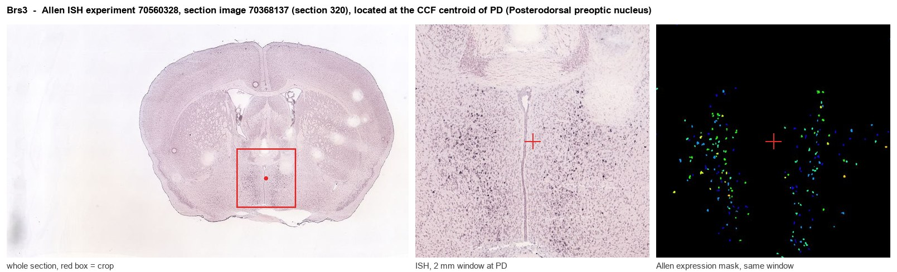
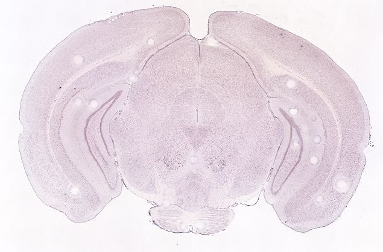
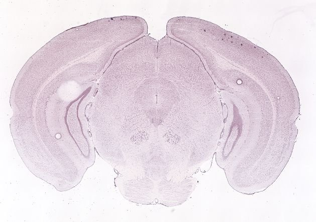
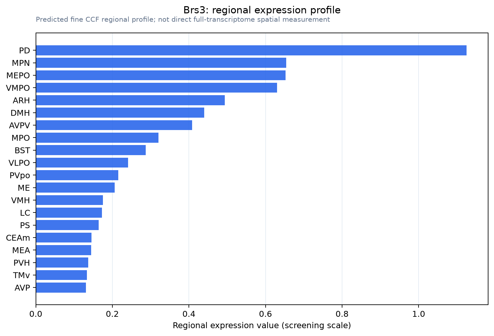

Brs3
Bombesin receptor subtype-3 (BRS-3)
Spatial tier: STRICT_EXCLUSIVE · Class: GPCR · Top region: PD (Posterodorsal preoptic nucleus) · Positive regions: 10/554
49.5Discovery Score
41.8Targetability Score
CEvidence grade C
What this means: Brs3: predicted fine-region profile is strict-exclusive, with 10 positive regions out of 554 (limit 12); direct spatial validation is required.
Function in PD: evidence, prediction, innovation
- Gene function
- BRS3 is an orphan class A bombesin-family GPCR, Gq/G11-coupled and calcium-mobilising; no endogenous ligand is confirmed; agonists MK-5046 and Bag-1 and antagonist Bantag-1 exist. Brs3-null mice are obese with mildly raised food intake, reduced metabolic rate and lower temperature, a long-standing anti-obesity target.
- Region function
- The posterodorsal preoptic nucleus is a small caudal cluster bordering parastrial nucleus, BNST and anterior PVH, controlling temperature, sleep and male sexual behaviour.
- Published in this region
- direct Pinol et al. 2021: preoptic Brs3 neurons are cold-activated; activation raises body temperature, heart rate and blood pressure via BAT thermogenesis and PVH/DMH sympathetic output, inhibition lowers temperature, silencing destabilises the set point, though manipulations spanned MnPO/MPO, not this nucleus. Pinol et al. 2018 and Maruyama et al. 2018 found parallel DMH/MPA Brs3 thermogenic and energy-expenditure roles.
- Predicted function
- Prediction: PD Brs3 neurons are a caudal node of this warm-defence module linking thermogenesis to arousal and reproductive state. Gq coupling predicts local MK-5046 raises core temperature and heart rate, while Bantag-1 or PD DREADD inhibition blunts cold defence and stress hyperthermia. A sex-specific role in copulation hyperthermia is testable.
- Innovation
- ★★☆☆☆ 2/5 BRS3 is well studied in preoptic and DMH thermoregulation, so only posterodorsal specificity is new.
- Tools
- Brs3-Cre and Brs3-null mice (Pinol et al. 2018, 2021); agonists MK-5046 and Bag-1, antagonist Bantag-1; Cre-dependent AAV DREADDs/ChR2 and photometry work here; Esr1-Cre and Vgat/Vglut2-Cre available.
- References
Direct evidence located at the region

Allen ISH experiment 70560328, section image 70368137 (section 320): the section that contains the CCF centroid of Posterodorsal preoptic nucleus according to the Allen image-to-atlas alignment (reference_to_image), with a 2 mm window around that point. Left: whole section, red box = window. Middle: ISH signal. Right: Allen's expression-mask view of the same window. open this image in the Allen viewer
Look it up yourself: Allen Mouse Brain ISH for Brs3Allen reference atlas: PD (structure 914)ABC Atlas MERFISH viewer(in the ABC Atlas choose dataset MERFISH-C57BL6J-638850-CCF, colour cells by gene "Brs3" or by parcellation_substructure "PD")All genes confined to PD + 3-D brain
Direct spatial evidence
MERFISH REGION LOCATOR

DIRECT ALLEN ISH

DIRECT ALLEN ISH

Regional expression figure

Predicted WMB × fine-CCF profile; not direct full-transcriptome spatial measurement.
Spatial profile
Evidence and specificity
- Evidence status
- PREDICTED_FINE
- Direct sources
- None; predicted localization only
- Exclusive threshold
- 12 positive regions out of 554
- Spatial specificity
- 0.406
- Top-region fraction
- 0.118
- Filter status
- PASS
Interpretation limits
- Cell-type-to-region projection is imputed expression, not direct spatial measurement.
- Adult reference atlases do not establish stability across age, sex, strain, state, or disease.
- Transcript abundance does not guarantee protein abundance or genetic-tool performance.